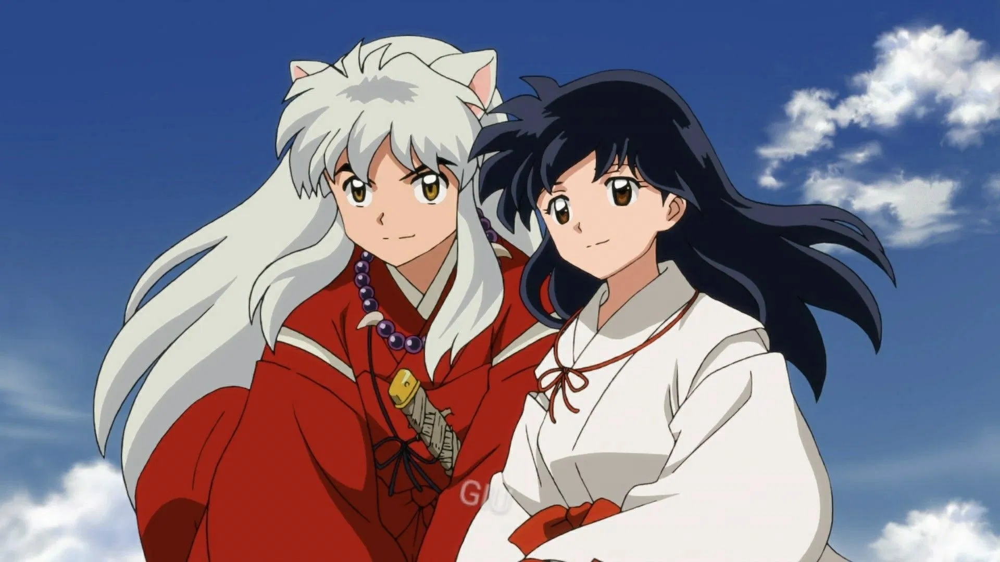
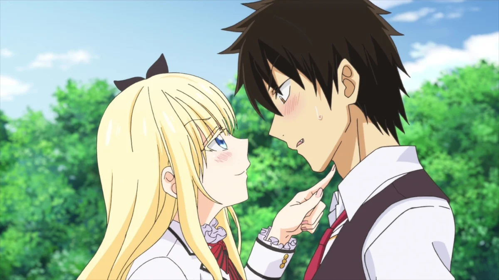
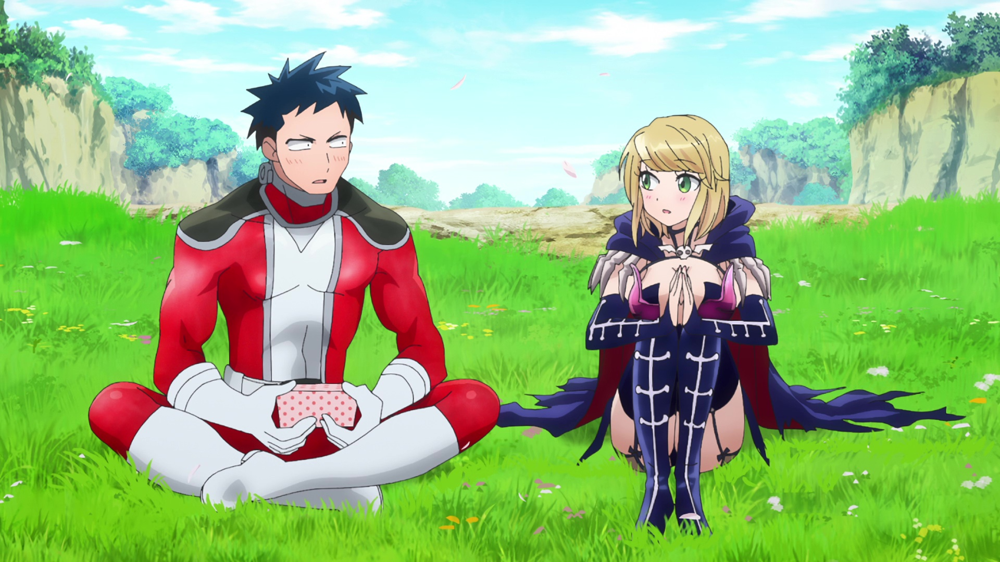
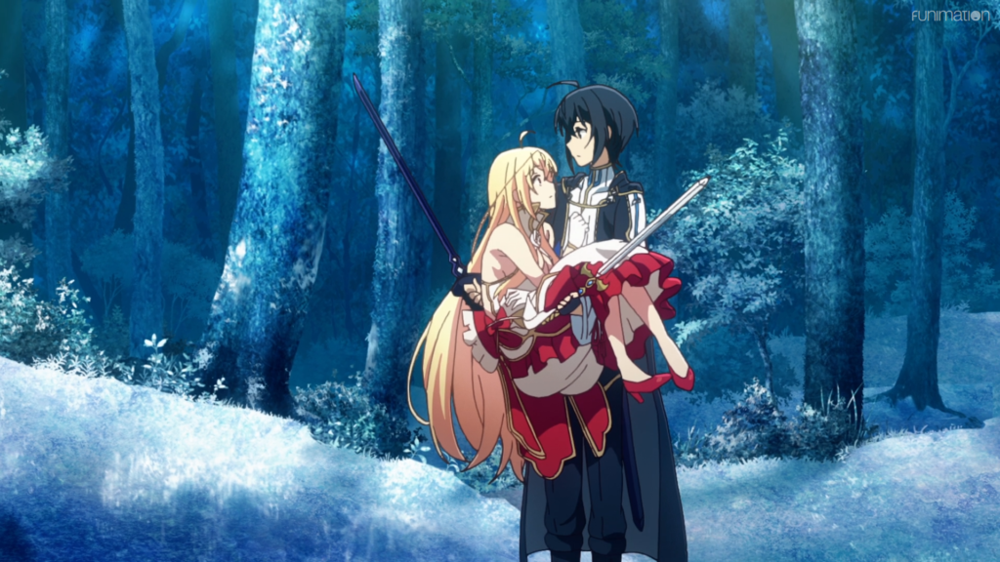
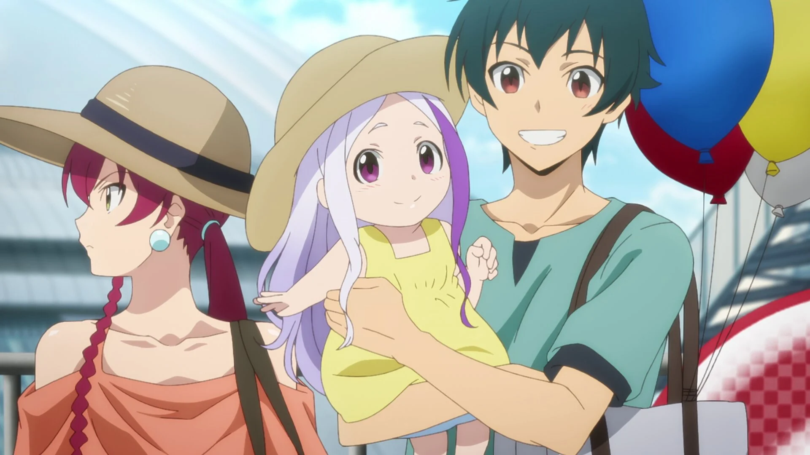
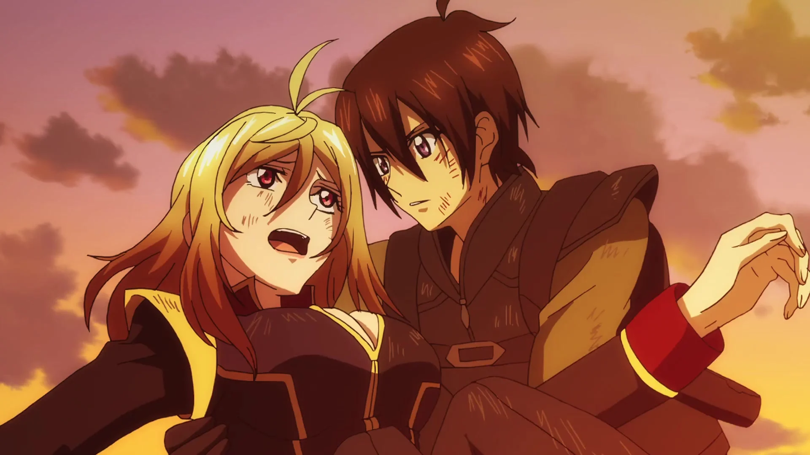
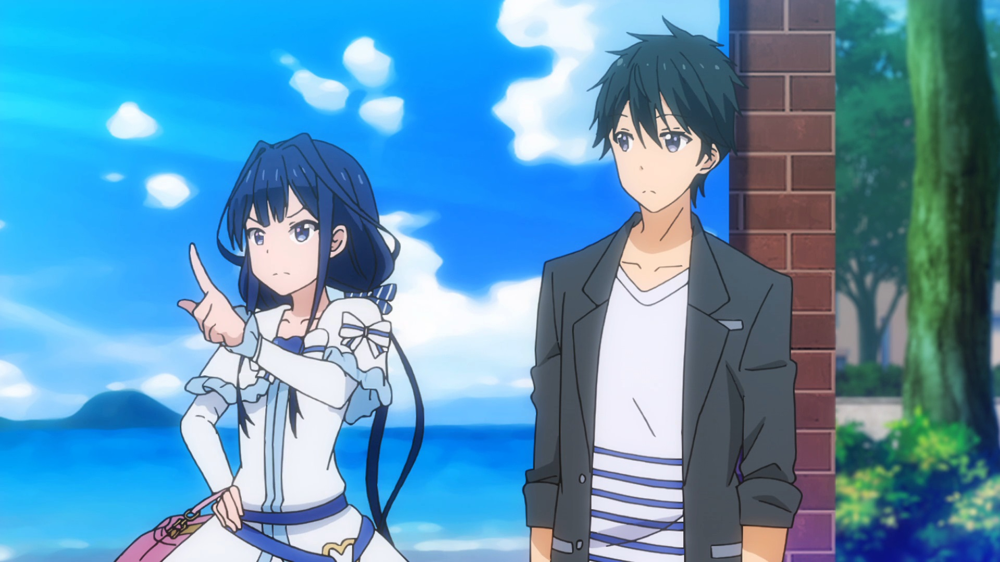
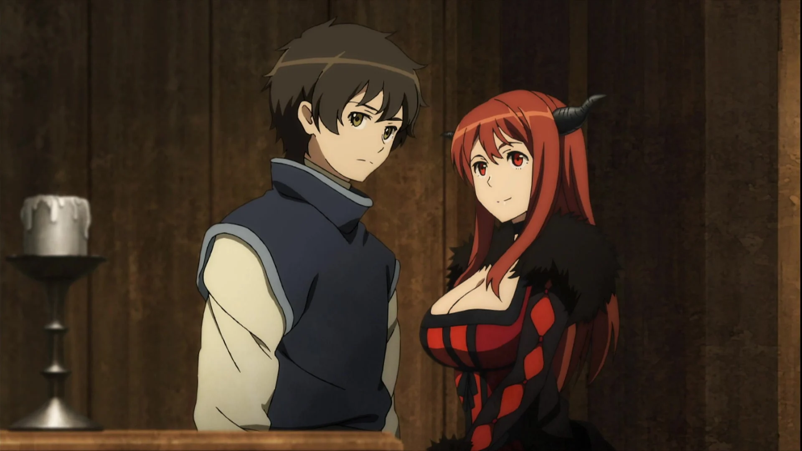

SMASH Senpai
Top 10 Anime Where Enemies Fall in Love — From Death Threats to Dating
Some of the most unforgettable romance anime don’t begin with kindness or attraction — they begin with hatred. Rival factions. Opposing ideals. Even literal enemies on the battlefield.
These anime explore relationships where the characters start on opposite sides, forced to clash before they ever connect. What begins as conflict slowly transforms into understanding, respect, and eventually love.
The tension is what makes these romances special. Every interaction feels charged. Every moment of vulnerability feels dangerous. When enemies fall in love, the stakes are higher — and the emotions hit harder.
From action-packed battlefields to ideological wars and personal grudges, these stories prove that love can bloom even in the most hostile conditions.
These are the Top 10 Anime Where Enemies Fall in Love — intense, emotional, and impossible to look away from.
Sponsored
#1 Inuyasha
Inuyasha is one of the most iconic enemies-to-lovers anime ever created. What begins as hostility, distrust, and constant fighting slowly transforms into one of anime’s most emotionally earned romances. Inuyasha, a half-demon driven by anger and pride, clashes immediately with Kagome, a modern girl pulled into a dangerous feudal world.
Their relationship starts rough. Insults are frequent. Trust is nonexistent. They’re forced to work together not because they want to, but because survival demands it. Over time, shared battles, sacrifices, and vulnerability begin to break down their walls. The romance never feels rushed — it grows through experience.
What makes Inuyasha special is the emotional baggage. Inuyasha struggles with his identity and abandonment. Kagome must accept a world filled with violence and loss. Their love develops alongside pain, jealousy, and difficult choices, making every moment feel earned.
The series balances action, fantasy, and romance effortlessly. The enemies-to-lovers dynamic is reinforced by rival love interests, misunderstandings, and past regrets. Instead of instant chemistry, Inuyasha delivers slow-burn emotional payoff.
Inuyasha proves that love forged through conflict lasts longer, hurts deeper, and feels more real than romance built on comfort alone.
- Episode count: 193 (including Final Act)
- Genre: Action, Romance, Fantasy
- Known for: Slow-burn romance, emotional growth
- Core theme: Trust built through conflict

play anime smash or pass here (not sponsored)
SMASH SENPAI – Smash or Pass#2 Boarding School Juliet
Boarding School Juliet is a modern anime take on the classic Romeo and Juliet story — except this time, it leans fully into the enemies-to-lovers trope. Set in a prestigious academy divided between two hostile factions, the anime follows Romio and Juliet, leaders on opposite sides of an endless rivalry.
Publicly, they are enemies. Privately, they are secretly in love. The tension comes from maintaining appearances while hiding genuine affection in a world that would tear them apart if the truth were revealed. Every interaction feels risky, every misunderstanding feels dangerous.
What makes this anime work is how it treats romance seriously. Love isn’t just a secret — it’s a rebellion. Their feelings challenge traditions, loyalty, and inherited hatred. Instead of shallow drama, the story focuses on trust, communication, and emotional maturity.
Unlike darker enemies-to-lovers anime, Boarding School Juliet balances tension with comedy and warmth. Conflicts are real, but hope always exists. The characters grow not by fighting each other, but by choosing understanding over pride.
It’s a perfect choice for viewers who love romance fueled by opposition but still want heart, humor, and emotional payoff.
- Episode count: 12
- Genre: Romance, Comedy, School
- Known for: Secret relationship, rival factions
- Core theme: Love versus inherited hatred
Sponsored
#3 Love After World Domination
Love After World Domination flips the enemies-to-lovers trope into something surprisingly wholesome. The anime follows a classic setup: a heroic leader and a villainous commander locked in an endless battle for the fate of the world. Except — they’re secretly dating.
Desumi and Fudo are supposed to be mortal enemies. On the battlefield, they clash with full force. Off the battlefield, they struggle with dates, jealousy, and hiding their relationship from their respective organizations. The contrast creates constant tension and charm.
What makes this series stand out is how it humanizes both sides. Villains aren’t evil for the sake of it. Heroes aren’t perfect. Their love challenges the artificial nature of conflict imposed by systems and roles.
The anime blends comedy and romance without undermining emotional stakes. Every close call risks exposure. Every romantic moment feels stolen. The enemies-to-lovers dynamic is playful, but still meaningful.
Love After World Domination proves that even in exaggerated settings, love can feel sincere, awkward, and deeply human.
- Episode count: 12
- Genre: Romance, Comedy, Action
- Known for: Hero × villain romance
- Core theme: Love against opposing roles
#4 Our Last Crusade or the Rise of a New World
Our Last Crusade or the Rise of a New World is a pure enemies-to-lovers romance built on ideological warfare. Set in a world divided between a technologically advanced empire and a magical sovereign nation, the anime follows Iska and Aliceliese, elite fighters destined to kill each other.
From their very first encounter, they stand on opposite sides of history. They are trained enemies, raised to believe the other represents everything wrong with the world. Yet, every time they meet, hostility slowly gives way to curiosity, respect, and emotional restraint.
What makes this romance compelling is the mutual understanding. Neither character is cruel or blind. They both question the endless war, recognizing that their conflict is inherited rather than chosen. Their bond grows not through comfort, but through shared moments where killing feels impossible.
The anime thrives on tension. Every reunion could be their last. Every battle risks destroying what little connection they’ve built. Love here is dangerous — not because it’s forbidden, but because it threatens the very systems they serve.
Our Last Crusade delivers a tragic, hopeful enemies-to-lovers story where love becomes an act of rebellion against a broken world.
- Episode count: 24
- Genre: Romance, Fantasy, Action
- Known for: Star-crossed lovers, war-driven romance
- Core theme: Love versus inherited hatred
Sponsored
#5 The Devil Is a Part-Timer!
The Devil Is a Part-Timer! takes the enemies-to-lovers trope and disguises it as comedy — but beneath the humor lies a surprisingly deep emotional arc. The story follows Satan, once a feared demon lord, now working part-time at a fast-food restaurant in modern Tokyo.
His greatest enemy, the hero Emilia, follows him into this new world. Initially, her sole purpose is revenge. She despises everything he represents. But as their lives intertwine, the clear lines between hero and villain begin to blur.
What makes this dynamic compelling is forced coexistence. They share responsibilities, financial struggles, and everyday human experiences. The hatred that once defined them slowly erodes, replaced by understanding, awkward care, and emotional dependence.
The romance develops subtly. It’s built through shared silence, mutual protection, and moments of vulnerability. Neither character wants to admit how much the other now matters — which makes every interaction feel emotionally charged.
The Devil Is a Part-Timer! proves that even the fiercest enemies can change when forced to live as equals, not symbols of war.
- Episode count: 13+ (multiple seasons)
- Genre: Romance, Comedy, Fantasy
- Known for: Hero × demon dynamic
- Core theme: Identity beyond labels
#6 Yakuza Fiancé

Yakuza Fiancé delivers one of the most intense enemies-to-lovers romances in recent anime. Centered around an arranged marriage between rival crime families, the series throws two dangerous individuals into a relationship built on distrust.
Both leads are raised in violence. Love is a weakness. Trust is a liability. Their engagement is political — not romantic. Every interaction feels like a power struggle, where affection could be manipulation and kindness could be a trap.
What makes Yakuza Fiancé gripping is its psychological tension. The characters constantly test each other. Dominance, control, and emotional restraint replace typical romantic gestures. Yet, beneath the danger, genuine attachment begins to surface.
The romance doesn’t soften the characters. Instead, it exposes their vulnerabilities. Fear of betrayal, fear of attachment, and fear of losing control shape every emotional beat. Love becomes something terrifying — because it can be exploited.
Yakuza Fiancé is a dark, mature take on enemies-to-lovers, where romance feels dangerous, unstable, and irresistibly intense.
- Episode count: 12
- Genre: Romance, Drama, Crime
- Known for: Dark romance, power dynamics
- Core theme: Love as a dangerous weakness
Sponsored
#7 Cross Ange: Rondo of Angel and Dragon
Cross Ange is one of the darkest and most aggressive enemies-to-lovers romances in anime. It begins with pure hatred. Ange starts as a privileged princess who despises the oppressed Norma — only to discover she is one herself.
Thrown into a brutal world of violence, discrimination, and survival, Ange is forced to fight alongside people she once viewed as subhuman. Among them are warriors who don’t trust her, resent her, and would gladly let her die.
What makes Cross Ange hit hard is how unforgiving it is. The characters don’t soften quickly. Hatred lingers. Trauma builds. Romance emerges slowly, born from shared suffering rather than comfort.
Ange’s emotional growth is painful to watch. She must confront her past beliefs, accept responsibility, and learn empathy the hard way. Love becomes possible only after pride, cruelty, and fear are stripped away.
Cross Ange is messy, controversial, and emotionally raw — but its enemies-to-lovers arc feels earned through pain, not convenience.
- Episode count: 25
- Genre: Romance, Action, Mecha, Drama
- Known for: Brutal character development
- Core theme: Redemption through suffering
#8 Romeo × Juliet

Romeo × Juliet is the ultimate enemies-fall-in-love story — reimagined through anime. Based on Shakespeare’s tragedy, the series transforms political hatred into a sweeping fantasy romance.
Romeo and Juliet belong to families locked in violent conflict. Their love is forbidden, dangerous, and destined to be discovered. From the start, their relationship exists under the constant threat of death.
What makes this version compelling is its emotional pacing. Love doesn’t arrive instantly. Trust builds through shared moments, quiet conversations, and the realization that inherited hatred should not define their futures.
The anime emphasizes sacrifice. Every romantic moment feels stolen. Every confession carries risk. Their love becomes an act of rebellion against a world that demands violence.
Romeo × Juliet is tragic, beautiful, and emotionally heavy — proving that even centuries later, enemies-to-lovers still breaks hearts.
- Episode count: 24
- Genre: Romance, Fantasy, Drama
- Known for: Tragic love story
- Core theme: Love versus fate
#9 Masamune-kun’s Revenge
Masamune-kun’s Revenge flips the enemies-to-lovers trope into a romantic mind game. Masamune was once rejected and humiliated, leading him to reinvent himself solely to make the girl who hurt him fall in love — and then reject her.
Aki Adagaki, known as the “Cruel Princess,” initially appears cold, arrogant, and emotionally distant. Their relationship begins not with affection, but calculated manipulation.
What makes the series engaging is the emotional confusion. Masamune’s revenge plan begins to collapse as genuine feelings develop. Hatred blurs into attraction, and emotional walls crack unexpectedly.
The anime explores insecurity, pride, and fear of vulnerability. Both characters hide behind personas, terrified of being hurt again. Love becomes dangerous because it exposes old wounds.
Masamune-kun’s Revenge proves that sometimes the biggest enemy isn’t the other person — it’s unresolved pain.
- Episode count: 12 + sequel
- Genre: Romance, Comedy, Drama
- Known for: Revenge-based romance
- Core theme: Pride versus vulnerability
#10 Maoyu: Archenemy & Hero
Maoyu: Archenemy & Hero offers a unique, intellectually driven enemies-to-lovers romance. Instead of fighting to the death, the Hero and Demon Lord question the purpose of their war.
Their relationship begins with disbelief rather than hatred. The Demon Lord proposes cooperation, arguing that endless war only perpetuates suffering. Romance grows quietly, built on respect, ideology, and mutual understanding.
What makes Maoyu stand out is its maturity. Love develops through conversation, shared goals, and trust — not dramatic confessions. The enemies-to-lovers arc feels philosophical rather than emotional.
The anime explores economics, politics, and social reform, using romance as a stabilizing force rather than the main conflict. Their love becomes symbolic — proof that cooperation is stronger than violence.
Maoyu is subtle, intelligent, and deeply satisfying for viewers who enjoy thoughtful romance with meaning.
- Episode count: 12
- Genre: Romance, Fantasy, Political Drama
- Known for: Intelligent storytelling
- Core theme: Love as diplomacy
Play Smash or Pass on SMASH Senpai.
 PLAY SMASH OR PASS
PLAY SMASH OR PASS